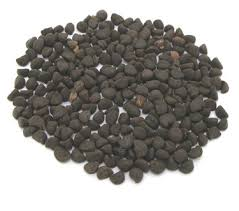

Tên khác:
Khiên ngưu tử (Pharbitis hay Se men Pharbitidis) là hạt phơi khô của cây khiên ngưu hay bìm bìm biếc. Cây khiên ngưu còn cho ta vị thuốc nhựa
Còn gọi là Hắc sửu. Bạch sửu, bìm bìm biếc, kalađana (Ấn Độ)., Bồ tăng thảo, Cẩu nhĩ thảo, Giả quân tử, Hắc ngưu, Nhị sửu, Tam bạch thảo, Thảo kim linh, Thiên già, Lạt bát hoa ...
Tên khoa học: Pharbitis hederacea Choisy
Thuộc họ Bìm bìm Convolvulaceae.
Tên tiếng trung: 牽 牛
Cây Khiên ngưu
( Mô tả, hình ảnh, thu hái, chế biến, thành phần hoá học, tác dụng dược lý )
Mô tả cây
 Khiên ngưu là một loại
dây leo, cuốn, thân mảnh, có điểm những lông hình sao.
Lá hình tim xẻ 3 thùy, nhẵn và xanh ở mặt trên, xanh
nhạt và có lông ở mặt dưới, dài 14cm, rộng 12cm,
cuống dài 5-9cm, gầy, nhẵn. Hoa màu hồng tím hay lam
nhạt, lớn, mọc thành im 1-3 hoa, ở kẽ lá. Quả nang
hình cầu, nhẵn, đường kính 8mm, có 3 ngăn. Hạt 2-4,
hình 3 cạnh, lưng khum, hai bên dẹp, nhẵn nhưng ở tễ
hơi có lông, màu đen hay trắng tùy theo loài, dài
5-8mm, rộng 3-5mm. 100 hạt chỉ nặng chừng 4,5g.
Khiên ngưu là một loại
dây leo, cuốn, thân mảnh, có điểm những lông hình sao.
Lá hình tim xẻ 3 thùy, nhẵn và xanh ở mặt trên, xanh
nhạt và có lông ở mặt dưới, dài 14cm, rộng 12cm,
cuống dài 5-9cm, gầy, nhẵn. Hoa màu hồng tím hay lam
nhạt, lớn, mọc thành im 1-3 hoa, ở kẽ lá. Quả nang
hình cầu, nhẵn, đường kính 8mm, có 3 ngăn. Hạt 2-4,
hình 3 cạnh, lưng khum, hai bên dẹp, nhẵn nhưng ở tễ
hơi có lông, màu đen hay trắng tùy theo loài, dài
5-8mm, rộng 3-5mm. 100 hạt chỉ nặng chừng 4,5g.
Ngoài hạt khiên ngưu kể trên, người ta còn dùng hạt cây mao khiên ngưu Ipomea purpurea (L). Lam. (Pharbztis hispida Choisy) cùng họ.
Khiên là dắt, ngưu là trâu là vì có người dùng vị thuốc này khỏi bệnh, dắt trâu đến tạ ơn người mách thuốc.
Hắc sửu là chỉ hạt màu đen, bạch sửu là hạt màu trắng.
Phân bố, thu hái và chế biến
Mọc hoang ở nhiều tỉnh nước ta, còn mọc ở Ấn Độ, Malaixya, Thái Lan...
Vào các tháng 7-10, quả chín, người ta hái về, đập lấy hạt phơi khô là được.
Thành phần hoá học

Trong Khiên ngưu tử có Pharbitin ( Pharbitic acid và vài Purolic acid) là chất Glocosid có khoảng 2%, Nilic acid, Gallic acid, Lysergol, Chanoclavine, Penniclavine, Isopenniclavine, Elymoclavine , ngoài ra còn chừng 11% chất béo và 2 sắc tố cũng là glucozit. có chừng 2% chất glucozit gọi là phacbitin có tác dụng tẩy
Tác dụng dược lý :
+Tác Dụng Tẩy Xổ : chất Pharbitin có tác dụng tẩy xổ mạnh tương tự chất Jalapin. Khi chất Pharbitin vào ruột gặp mật và dịch ruột sẽ thủy phân thành Khiên ngưu tử tố kích thích ruột làm tăng nhu động gây ra tẩy xổ. Nước hoặc cồn chiết xuất Khiên ngưu đều có tác dụng gây tiêu chảy ở chuột nhắt nhưng nước sắc thì không có tác dụng đó.
+Tác Dụng Lên Thận : Khiên ngưu tử làm tăng độ lọc Inulin của Thận.
+Tác Dụng Diệt Giun : Khiên ngưu tử, in vitro có tác dụng ức chế giun đũa (Trung Dược Học ).
+ Độc tính : Độc tính của thuốc đối với chuột, liều LD50 là 37,5/kg. Ở người, có triệu chứng muốn nôn, nôn do thuốc kích thích trực tiếp lên đường tiêu hóa. Liều cao có thể ảnh hưởng đến Thận, dẫn đến tiểu ra máu cũng như các triệu chứng thần kinh(Trung Dược Học ).
Vị thuốc Khiên ngưu
( Công dụng, Tính vị, quy kinh, liều dùng )

D. Công dụng và liều dùng
Tính vị:
cay, tính nóng hơi có độc,
Qui kinh:
vào 3 kinh phế, thận, và đại tràng.
Công dụng:
tả khí phân thấp nhiệt, trục đờm, tiêu ẩm lợi nhị tiện là thuốc chữa tiện bĩ, và cước khí, chủ trị hạ khí, lợi tiểu chữa cước thũng, sát trùng.
Trong thực tế, khiên ngưu dùng làm thuốc thông đại và tiểu tiện, thông mật đôi khi có tác dụng ra giun.
Liều dùng
.jpg)
Mỗi ngày 2-3g tán bột, dùng nước chiêu thuốc. Nếu dùng nhựa khiên ngưu chỉ dùng mỗi ngày O,20-O,40g, có thể dùng tới 0,60- 1 ,20g
Nhựa khiên ngưu chế như sau: Chiết suất bằng cồn, cô để thu hồi cồn, dùng nước rửa cặn còn lại cho hết phần tan trong nước, sấy khô.
Ứng dụng lâm sàng của vị thuốc Khiên ngưu
Đơn thuốc chữa phù thũng, nằm ngồi không được:
Khiên ngưu 10g, nước 300ml. Sắc còn 150ml chia 2 lần uống trong ngày, nếu tiểu tiện nhiều được thì khỏi Có thể tăng liều uống cao hơn nữa tuỳ theo bệnh tình có thể uống tới 40g.
Viên khiên ngưu chữa tinh thần phân liệt
Đại hoàng 12g, hùng hoàng 12g, nấc và bạch sửu 24g, kẹo mạch nha 1 6g. Các vị tán bột, viên thành viên 2g. Ngày uống 4 viên. Dùng một đợt 15 ngày liền, nghỉ 7 ngày rồi lại dùng tiếp.
Trị thủy thũng, cước khí:
Binh lang Khiên ngưu tử Mộc hương Trần quất bì (bỏ xơ) Xích phục linh (bỏ vỏ đen) Đều 30g. Tán bột Mỗi lần dùng 6g. Thêm 150ml nước, sắc uống
(Khiên ngưu thang - Thánh Tế Tổng Lục, Q.79. - Triệu Cát)
Trị phù, táo bón, tiểu bí:
Bạch Khiên Ngưu Tán( Y Tông Kim Giám, Q.76. Ngô Khiêm)
Vị thuốc: Bạch khiên ngưu (nửa để sống, nửa để chín) .. 4g Bạch truật (sao đất) 4g Quất hồng 4g Cam thảo (nướng) 4g Tang bạch bì 4g Mộc thông 4g Tán bột. Ngày uống 8–12g.
Trị trẻ nhỏ bị bạo suyễn (gọi là mã tỳ phong), đờm hỏa làm tổn thương phế, nhiệt đờm ủng tắc:
Chỉ xác, Đại hoàng (sao rượu) Hắc khiên ngưu Tán bột. Uống với nước sôi
Một số bài thuốc có khiên ngưu:
Đại Hoàng Khiên Ngưu Tán (Tố Vấn Bệnh Cơ Khí Nghi Bảo Mệnh Tập- . Lưu Hà Gian) Trị táo bón.
Ngưu Hoàng Đoạt Mệnh Tán (Chứng Trị Chuẩn Thằng. Vương Khẳng Đường) Trị chứng mã tỳ phong.
Nga Truật Hoàn (Chứng Trị Chuẩn Thằng. Vương Khẳng Đường) Hòa tỳ, ích vị, dẫn khí, thanh thần, kích thích tiêu hóa.
Quy Ngưu Tán (Ấu Ấu Tu Tri-. Lê Hữu Trác) Trị chứng đau từ bìu dái đến bụng dưới, tiểu bí, khóc đêm
Thái Bạch Tán (Chứng Trị Chuẩn Thằng.- Vương Khẳng Đường) Trị kinh phong cấp.
Tham khảo
Nơi mua bán vị thuốc Khiên ngưu đạt chất lượng ở đâu?
Trước thực trạng thuốc đông dược kém chất lượng, nguồn gốc không rõ ràng,... xuất hiện tràn lan trên thị trường, làm ảnh hưởng tới hiệu quả điều trị cũng như ảnh hưởng tới sức khỏe của bệnh nhân. Việc lựa chọn những địa chỉ uy tín để mua thuốc đông dược là rất quan trọng và cần thiết. Vậy khách hàng có thể mua vị thuốc Khiên ngưu ở đâu?
Khiên ngưu là vị thuốc nam quý, được sử dụng rộng rãi trong YHCT. Hiện tại hầu hết các cửa hàng thuốc đông dược, phòng khám đông y, phòng chẩn trị YHCT... đều có bán vị thuốc này. Tuy nhiên người mua nên chọn những địa chỉ có uy tín, đảm bảo chất lượng, có giấy phép hoạt động để mua được vị thuốc đạt chất lượng.
Với mong muốn bệnh nhân được sử dụng những loại dược liệu đúng, chất lượng tốt, phòng khám Đông y Nguyễn Hữu Toàn không chỉ là đia chỉ khám chữa bệnh tin cậy, uy tín chất lượng mà còn cung cấp cho khách hàng những vị thuốc đông y (thuốc nam, thuốc bắc) đúng, chuẩn, đạt chuẩn chất lượng. Các vị thuốc có trong tiêu chuẩn Dược điển Việt Nam đều được nghành y tế kiểm nghiệm đạt chất lượng tiêu chuẩn.
Vị thuốc Khiên ngưu được bán tại Phòng khám là thuốc đã được bào chế theo Tiêu chuẩn NHT.
Giá bán vị thuốc Khiên ngưu tại Phòng khám Đông y Nguyễn Hữu Toàn: Gọi 18006834 để biết chi tiết
Tùy theo thời điểm giá bán có thể thay đổi.
+ Khách hàng có thể mua trực tiếp tại địa chỉ phòng khám: Cơ sở 1: Số 481 lô 22 Lê Hồng Phong, Phường Gia Viên, Thành phố Hải Phòng
Tag: cay Khien nguu, vi thuoc Khien nguu, cong dung Khien nguu, Hinh anh cay Khien nguu, Tac dung Khien nguu, Thuoc nam
Thaythuoccuaban.com Tổng hợp
*************************